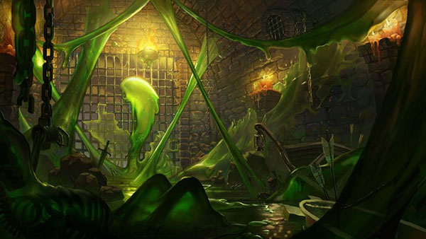

В конце 2021 года в Аватарах появилось новое подземелье с уникальной, ранее невиданной механикой походов – подземелье Метаморфов. Данное подземелье заменило гильдию Убийц Больших комаров и открыло новые возможности роста для Воинов, магов Чумы и Алхимиков.
В этой статье постараемся разобрать основные вопросы, связанные с данной локацией, сделаем немного расчетов, оценим дроп и т.д.
Особенности подземелья Метаморфов
Рассмотрим основные особенности данного подземелья, которые не раскрыты (или только частично раскрыты) в официальном описании:
- Подземелье расположено в Канализации Больших комаров, на месте прежней Гильдии Убийц – теперь эта локация называется Орден Крысы.
- Достаточно дойти до подземелья 1 раз и в следующие разы при входе в Канализацию аватару будет предложено сразу переместиться в Орден Крысы.
- Ни бонусы, ни штрафы Следопытов в данной локации не работают.
- Кристаллы спасения работают в данной локации.
- В случае, если Кристалл спасения сработал после поражения в бою с Метаморфом, повторный вызов Метаморфа невозможен.
- Подземелье для соло прохождения – вмешиваться друг другу в бои и создавать отряды нельзя.
- В Ордене Крысы можно покупать (за валюту Ордена) различные предметы – заклинания чумы, особые эликсиры и т.д. (подробнее)
- Все, что получено в Ордене Крысы (монетки Ордена и купленные предметы), можно продавать на аукционе
- Валютой Ордена являются монеты различной редкости – эти монеты можно получить за победу над Метаморфом.
- Монеты можно продавать на аукционе по 1-10 штук за раз
- За монеты Ордена можно покупать репутацию в Гильдии, что значительно упрощает/ускоряет прохождение подземелья
- На момент написания статьи в Ордене Крысы 14 этажей в подземелье
- Можно выбрать любой пройденный аватаром этаж при входе в подземелье
- На каждом этаже есть 4 кнопки активации (по углам) и алтарь призыва Метаморфа (центр карты)
- На каждом этаже есть россыпь тупиков, которые случайным образом заполнены различным мусором
- В мусоре выпадают мутагены (обычные и редкие)
- В мусоре выпадают ресурсы (обсидиан, алмазы и корунд) – чем глубже этаж, тем больше ресурсов (на первых этажах 2 ресурса, на 9 уже 4)
- С каждым этажом растет сила монстров и редкость попадающихся мутагенов (у мутантов)
- Можно выбрать уровень сложности прохождения подземелья Метаморфов (всего 3 уровня)
- Чем выше уровень, тем сильнее монстры
- На максимальном уровне сложности на аватара могут напасть редкие монстры – Баньши, Рапторы, Ледяные охотники, Саламандры и прочее
- Чем выше уровень, тем больше шанс найти что-то полезное в тупиках в мусоре
- Чем выше уровень, тем больше монет получает аватар за победу над Метаморфом.
Выпадение ресурсов в тупиках
Для начала рассмотрим данное подземелье с точки зрения фарма ресурсов.
Базовый шанс нахождения мусора 25%. Шанс нахождения ресурсов 30%
Rewad, великий и могучий
Итак, исходим из официальных данных по шансам найти ресурсы в тупиках.
- В среднем на 1 этаж имеется 80 тупиков.
- Пока посмотрим шансы без учета репутации
- В случае, если в тупике ресурсы, считаем, что игроку выдается 2-3 ресурса (напомню, чем глубже аватар, тем больше ресурсов)
| Параметр | Обычная сложность | Сложность Мутант | Сложность Метаморф |
|---|---|---|---|
| Шанс найти мусор | 25% | 32.5% | 37.5% |
| Шанс найти в мусоре ресурсы | 30% | 39% | 45% |
| Ресурсов будет найдено в 80 тупиках | 12-18 | 20-30 | 26-39 |
| Ресурсов будет найдено за 4 этажа | 48-72 | 80-120 | 104-156 |
| Ресурсов за полный обход подземелья | 108-162 | 180-270 | 234-351 |
Итого мат. ожидание для 1 этажа (80 тупиков) в серебре выглядит так (с учетом текущей цены на корунд, обсидиан и алмазы):
- Обычная сложность: 150 сер. * 15 = 2250 серебра
- Средняя сложность: 150 сер. * 25 = 3750 серебра
- Высокая сложность: 150 сер. * 32.5 = 4875 серебра
Теперь сделаем аналогичные расчеты, но с учетом бонусов репутации гильдии. Дабы не нагромождать расчетами статью, сделаем это за кадром и в качестве среднего дропа берем 2.5 ресурсов за 1 успешную проверку мусора.
| Сложность | Реп. lvl 2 (+10%/0%/0) | Реп. lvl 6 (+10%/10%/0) | Реп. lvl 8 (+25%/10%/0) | Реп. lvl 10 (+25%/25%/0) | Реп. lvl 12 (+45%/25%/0) | Реп. lvl 14 (+45%/45%/0) | Реп. lvl 18 (+45%/45%/+1) |
|---|---|---|---|---|---|---|---|
| Обычная | 2475 | 2723 | 3094 | 3516 | 4078 | 4731 | 6623 |
| Мутант | 4095 | 4410 | 4883 | 5406 | 6103 | 6891 | 9647 |
| Метаморф | 5400 | 5760 | 6300 | 6891 | 7678 | 8556 | 11978 |
Итого выходит, что на 18 уровне репутации за 1 полный обход 1 этажа вы получите в среднем 6600 серебра ресурсами на обычном уровне сложности. Неплохо.
Теперь посчитаем, а сколько раз нужно пройти подземелье, чтобы выфармить 1 шмотку из комплекта или особый эликсир/заклинание.
Сбор монет Ордена Крысы
Прежде чем перейти к расчетам, опишем особенности получения монет метаморфов.
При создании метаморфа, мы можем активировать от 1 до 7 мутагенов. Качество мутагенов влияет на итоговое качество получаемой монетки исходя из формулы:
СУММА(Редкость_вставленных_монет)/6,
где Редкость_вставленных_монет - от 1 до 5 (от обычных к легендарным)Не сложно заметить, что слотов у нас 7, а делитель в формуле 6, это важно.
Допустим, мы вставляем в Метаморфа 1 обычный, 5 редких и 1 эпический мутаген, сумма качества даст нам 1+2*5+4=15, делим на 6 ~= 2.5. То есть редкость получаемой монетки будет от Редкой до Элитной (2 или 3).
А на 25 уровне репутации в гильдии, получим еще +15% к редкости монеты, то есть, для предыдущих вычислений получим 2.5*1.15 ~= 2.9. Монета скорее всего будет Элитной.
Итак, мы поняли, как примерно рассчитать качество получаемых монет. Теперь определимся с тем, а сколько монет мы вообще получаем за обход всех 14 этажей Метаморфов на разных уровнях сложности.
На обычном уровне сложности мы получаем 1 монету за 1 этаж. Редкость монет напрямую зависит от мутагенов Метаморфа. Допустим, что у нас на 1-2 этажах обычные мутагены, на 3-5 – редкие, на 6-8 элитные и на 9-11 эпические, 12+ легендарные. Итого, за полный обход подземелья получим 2 обычные, 3 редкие, 3 элитные, 3 эпические, 3 легендарные монеты (2-3-3-3-3).
На сложности Мутант получаем аналогично с обычной сложностью + 50 на 50 обычную или редкую монету каждый этаж, то есть 6.5-7.5-3-3-3 (+4.5 обычных и редких монет)
На сложности Метаморф монеты из обычного уровня сложности дублируются, то есть получаем следующее распределение монет: 8.5-10.5-6-6-6
Теперь не сложно посчитать, сколько раз нужно пройти подземелье, чтобы получить тот или иной предмет из магазина Метаморфов.
- Крысиный король (30-17-8-4-2):
- Обычная сложность:
- 2 обхода
- Мутант:
- 2 обхода
- Метаморф:
- 1 обход
- Обычная сложность:
- Репутация до уровня 18 (максимум фарма ресурсов) (855-455-180-30)
- Обычная сложность:
- 30 обходов
- Мутант:
- 28
- Метаморф:
- 14
- Обычная сложность:
- Предмет из сетов Чумного доктора и Трансмутации – на 1 вещь из сета нужно сделать в ~3 раз больше походов, чем для Короля (6-5-3 для разных уровней сложности). При этом, если учитывать то, что с 1 этажа можно получить минимум 2500 серебра с тупиков, получаем, что при полном обходе этажей, аватар соберет за 25 походов на простой сложности 2500*9*25… 12 000 серебра? Похоже на то, но полный обход подземелья займет кучу времени, а если заходить только в тупики по пути (около 20% всех тупиков), получим, что 1 полный сбор монет на шмотку из новых сетов даст серебра как раз на покупку этой вещи. То есть подземелье Метаморфов в какой-то степени самодостаточное подземелье, не требующее фарм ресурсов в шахте для сбора предметов. Получаемых внутри подземки ресурсов вполне хватит и на покупку сета, и на замоды.
Пара слов о Мутагенах
Одной из основных особенностей данного подземелья являются Мутагены – специальные расходники, с помощью которых аватар может усилить свои основные параметры – воинские и магические. За счет мутагенов можно собрать набор эффектов, которые значительно упростят и/или сократят время прохождения этажа.
Если определить самые выгодные с точки зрения скорости прохождения подземелья, можно выделить следующие мутагены.
У Воинов:
Здоровяк. Мутаген будет восстанавливать здоровье аватара до максимума в начале каждого боя (пока активен мутаген).- Вампир. Дает эффект вампиризма для контактных атак – сам эффект достаточно мощный, что позволит ходить по подземелью практически не думая о регенерации здоровья.
У Магов и Паладинов:
Волшебный. По аналогии со Здоровяком – полная регенерация маны в начале каждого боя.- Мутагены на усиление профильных школ магии. Значительно усиливает Призывателя, Разрушителя или Заклинателя аватара.
- Душекрад. Магический вампиризм – очень полезно для стихийных магов.
Выводы по метаморфам
- Отличная задумка и реализация нового контента, можно играться с мутагенами, создавая мощных персонажей на время прохождения подземки, при этом есть вызов в битвах с мутантами и метаморфом – то есть это, по сути, первый сборный босс в игре.
- Дроп в тупиках подземелья Метаморфов покрывает затраты на покупку новых сетов в Ордене Крысы, то есть Орден Крысы, как и Храм солнца, при правильном прохождении обеспечивает игрока и серебром, и уникальной валютой на покупку и замод сетов.
- Для сбора 1 вещи из новых сетов нужно пройти 14 этажей подземки ~5 раз на средней сложности, что вполне адекватно.
- Самые редкие монеты, которых всегда будет не хватать – обычные монетки. Как и в Гир-о-Кубе, в котором самых редких гиров падает больше, чем самых распространенных (на глубоких этажах)
- С помощью Мутагенов можно (и нужно) значительно сократить время прохождения подземелий за счет снижения требований к регенерации здоровья и маны аватара.
Спасибо за помощь в написании статьи – Eradicator